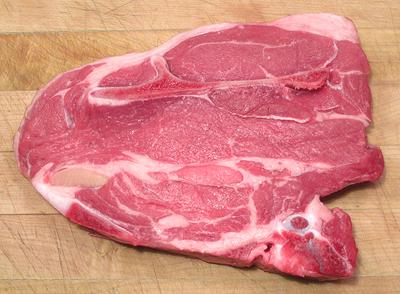

Veal Shoulder

[Beccerrito (Spanish)]
Veal Shoulder is of a much more manageable size than a Beef
Shoulder, so it is often sold as a whole cut, or, more usually,
boneless. It is quite tender, but, as with many tender cuts of
various beasts, flavor is not its strong point. Flavorful sauces
are in order.
The Veal Shoulder Steak is the veal equivalent of the Beef 7 Bone
Steak, with the same configuration. The photo specimen, a veal shoulder
steak, was 9 inches long, 7 inches wide, 1-3/8 inches thick and weighed
2.11 pounds, 2010 US $2.99/# on sale.
More on Cuts of Veal.
Cooking:
Most commonly, a whole boneless veal shoulder
is formed into a roll and tied to keep its shape. It is commonly
seared, then braised with a flavorful sauce. The veal shoulder steak is
also usually seared and braised with flavorful sauce elements to make up
for it's rather light flavor. The most common veal shoulder recipes are
Italian.
ab_vshldz 131103 - www.clovegarden.com
©Andrew Grygus - agryg@clovegarden.com - Photos
on this page not otherwise credited © cg1
- Linking to and non-commercial use of this page permitted